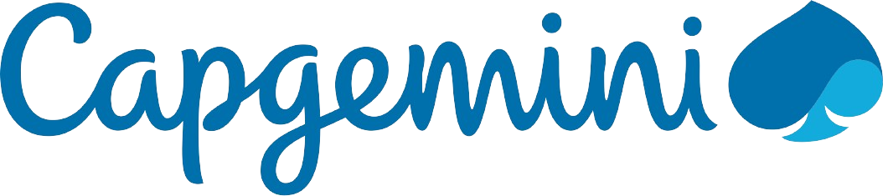

Experiences

Test Automation Engineer
Actively involved in GUI and API testing projects, contributing to test scenario creation, automation, defect identification, and test asset enhancement.
Key highlights include:
- - GUI Project: Overhauled previous project, increasing test executions and providing enhanced visibility.
- - API Project: Expanded test coverage, ensuring comprehensive endpoint testing and schema validation.
Power Platform Consultant Intern
As an intern at DXC Technology Morocco, collaborated within a team to develop a workforce management tool, prioritizing stakeholder engagement and agility.
Notable achievements include:
- - Implemented a centralized Power Apps solution, replacing manual Excel processes.
- - Automated tasks using gold source data to enhance data accuracy and expedite approval cycles.